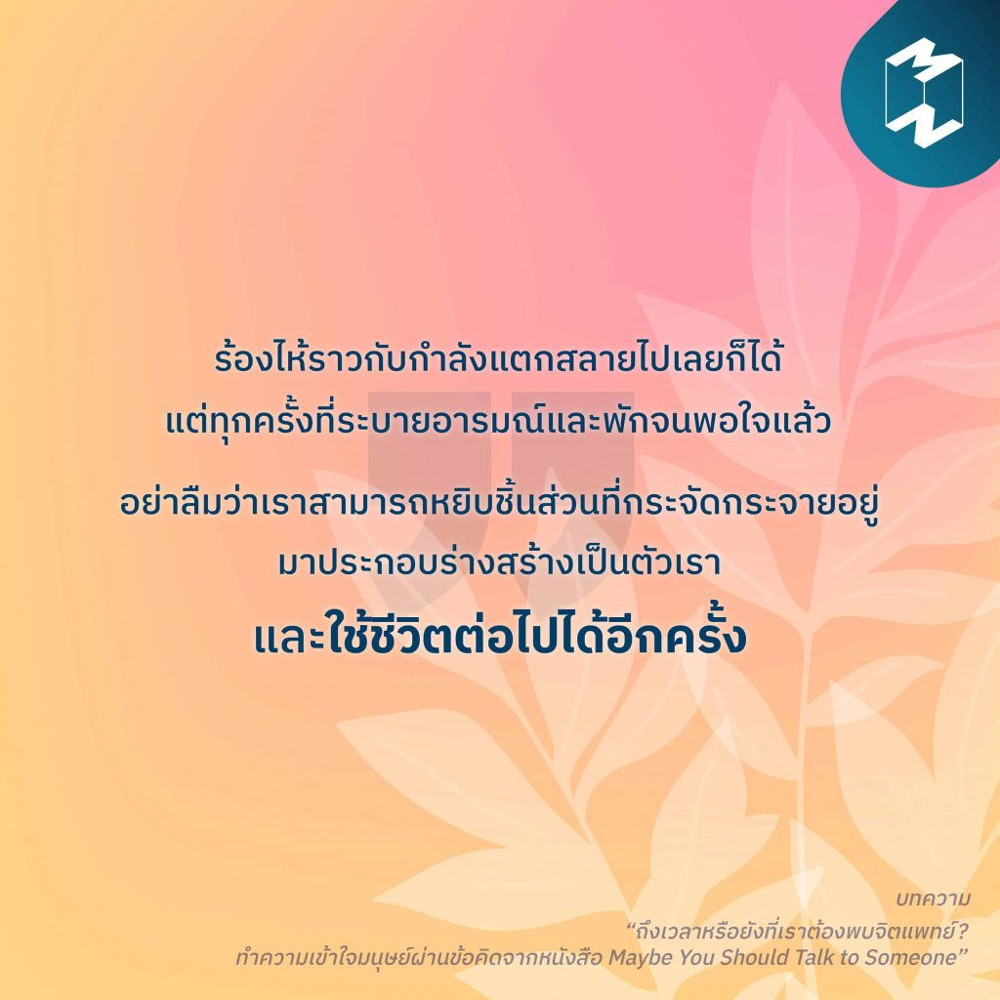

1)ใช้ชีวิตต่อไปได้อีกครั้ง
“ร้องไห้ราวกับกำลังแตกสลายไปเลยก็ได้ แต่ทุกครั้งที่ระบายอารมณ์และพักจนพอใจแล้ว อย่าลืมว่าเราสามารถหยิบชิ้นส่วนที่กระจัดกระจายอยู่ มาประกอบร่างสร้างเป็นตัวเรา และใช้ชีวิตต่อไปได้อีกครั้ง” “เพราะเราไม่ชอบความเจ็บปวด เราเลยหลีกเลี่ยงที่จะรู้สึกถึงมันหากทำได้ แต่ในการบำบัดนั้น เราต้องวางเกราะป้องกันเหล่านี้ลงและทำความเข้าใจกับสาเหตุที่แท้จริง แม้จะเจ็บปวดแค่ไหนก็ตาม” สำรวจจิตใจอันซับซ้อนของมนุษย์ เข้าใจความเจ็บปวด เรียนรู้การระบายอารมณ์ เยียวยาตัวเอง และออกเดินทางตามหาความสุขกันใหม่ ไปพร้อมๆ กับ 10 ข้อคิดจากหนังสือ “Maybe You Should Talk to Someone” ติดตามอ่านบทความ “ถึงเวลาหรือยังที่เราต้องพบจิตแพทย์? ทำความเข้าใจมนุษย์ผ่านข้อคิดจากหนังสือ Maybe You Should